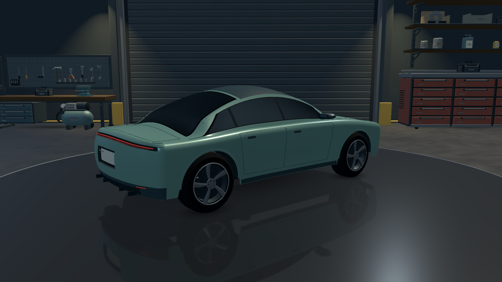
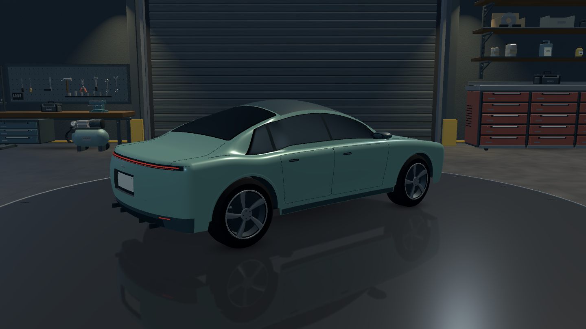

New shallow rear glazing, a separate painted transition, flatter full-width trunk and proper side seams replace the bowed glass and inset lid. The Garage views use the original game lighting and synthetic wear. Changes, verification and limits.


After · v16Before · v15Matched studio views and actual read-only CarShowroom Garage views. Worn views use synthetic condition values, without reading owner saves. Drag the slider or use its arrow keys. The production-camera option uses the unchanged camera profile over the diagnostic studio, not an actual race scene. “Mobile” here identifies the desktop renderer; it is not a device test.
Actual Garage · Actual rear view · Actual gameplay · Headlights · Commands and evidence · Original EV comparison review
Fictional vehicle, original authored game geometry. Reference manufacturers remain design references outside the game assets. Reload the project/game to see the new prepared model in an existing session.